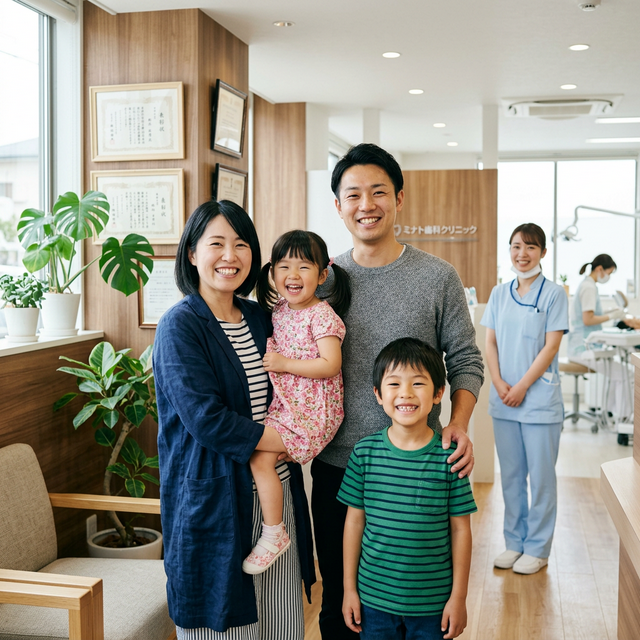
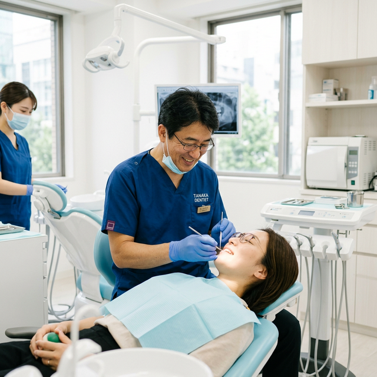
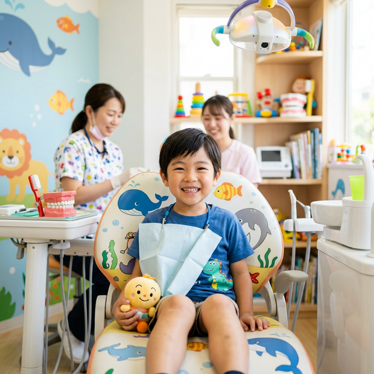
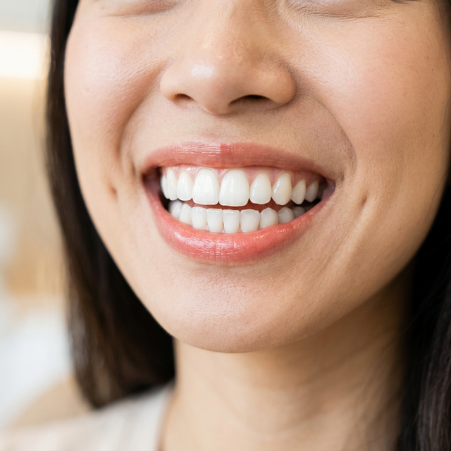

「痛い」「怖い」という歯医者のイメージを変えるため、
丁寧な説明と、痛みに最大限配慮した治療を行います。
小さなお子様からご年配の方まで、お気軽にご相談ください。
※初診の方も24時間WEBからご予約可能です。

徹底した
院内感染対策
歯が痛い・しみるが、治療の痛みが怖い
過去に説明不足のまま勝手に歯を削られた
子どもの虫歯予防や歯並びが気になっている
ずっと定期検診に行っていないので診てほしい
そのお悩み、あおぞらファミリー歯科にお任せください！
表面麻酔の使用や、極細の注射針、麻酔液を温めるなど、治療時の「チクッ」とした痛みを最小限に抑える工夫を徹底しています。
口腔内カメラやモニターを使用し、「今どんな状態で」「なぜ削る必要があるのか」をご納得いただけるまで分かりやすく説明します。
小さなお子様連れでも安心して通えるよう、院内にキッズスペースをご用意。ベビーカーのまま診療室にお入りいただけます。
使用する器具は患者様ごとに世界最高基準の滅菌器で処理。コップやエプロンは使い捨てを採用し、院内感染を徹底予防します。

なるべく「削らない・抜かない」治療を心がけ、ご自身の歯を長く残すための治療を行います。
痛くなってから行くのではなく、痛くならないために。プロによる徹底的なクリーニングを提供します。

歯医者嫌いにならないよう、まずは器具に慣れるところから。フッ素塗布やシーラントで虫歯を防ぎます。

削ることなく、薬剤の力で歯を本来の白さへ。オフィス、ホームの両方に対応しています。
はじめまして、あおぞらファミリー歯科・院長の〇〇です。
「歯医者は痛くて怖い場所」というイメージをお持ちの方は少なくありません。当院では、その不安を取り除くことを第一に考えています。
治療前のカウンセリングに十分な時間をかけ、患者様お一人おひとりのご希望や不安な点をお伺いした上で、最適な治療プランをご提案いたします。
ご家族皆様で安心して通い、一生涯ご自身の歯で美味しい食事を楽しんでいただけるよう、全力でサポートさせていただきます。少しでも気になることがあれば、どうぞお気軽にご相談ください。
院長 〇〇 〇〇
初めてご来院いただく際のスムーズな流れをご案内します。
WEB、またはお電話にてご予約ください。当日は保険証（またはマイナ保険証）とお薬手帳をお持ちください。
痛みがある場所、治療に対する不安、ご希望の治療期間などを専用のコーディネーターが丁寧にお伺いします。
必要に応じてデジタルレントゲン撮影や口腔内写真撮影を行い、目視では見えない部分の状態を正確に把握します。
検査結果をもとに、モニターを見ながら分かりやすく説明します。同意をいただいてから、痛みに配慮した治療を開始します。
あおぞらファミリー歯科
〒000-0000
〇〇県〇〇市〇〇町1-2-3 メディカルビル1F
（〇〇駅より徒歩3分 / 専用駐車場5台完備）
| 診療時間 | 月 | 火 | 水 | 木 | 金 | 土 | 日 |
|---|---|---|---|---|---|---|---|
| 9:30 - 13:00 | ● | ● | ● | 休 | ● | ● | 休 |
| 14:30 - 19:00 | ● | ● | ● | 休 | ● | ▲ | 休 |
※休診日：木曜・日曜・祝日
※▲土曜午後は14:30〜17:00まで
当院は患者様の待ち時間を減らすため、原則予約制となっております。
急な痛みがある場合も、まずはお電話にてご連絡ください。